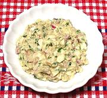

|
Smoked Herring SpreadDenmark - Bornholmer Salat | ||||
| Makes: Effort: Sched: DoAhead: |
20 ounces *** 45 min Best |
An intensely flavored spread for crackers, bread and Scandinavian open face sandwiches. The pungent saltiness of the smoked fish is tempered by the eggs and vegetables. | |||
|
2 2 3 1/2 2 2 1/4 |
oz c T T t |
Smoked Herrings (1) Eggs Radishes Chives (2) Mayonnaise Sour Cream Pepper |
Make: - (45 min)
|